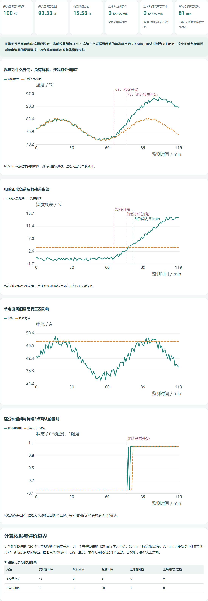
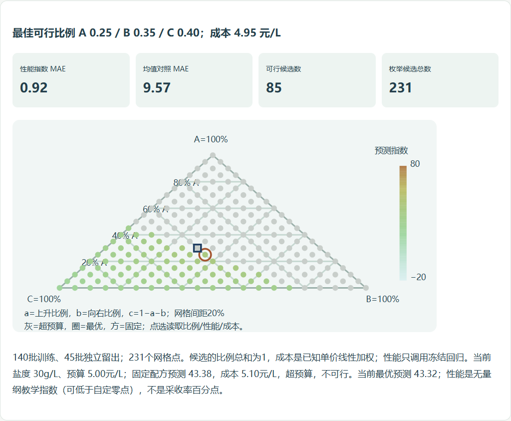
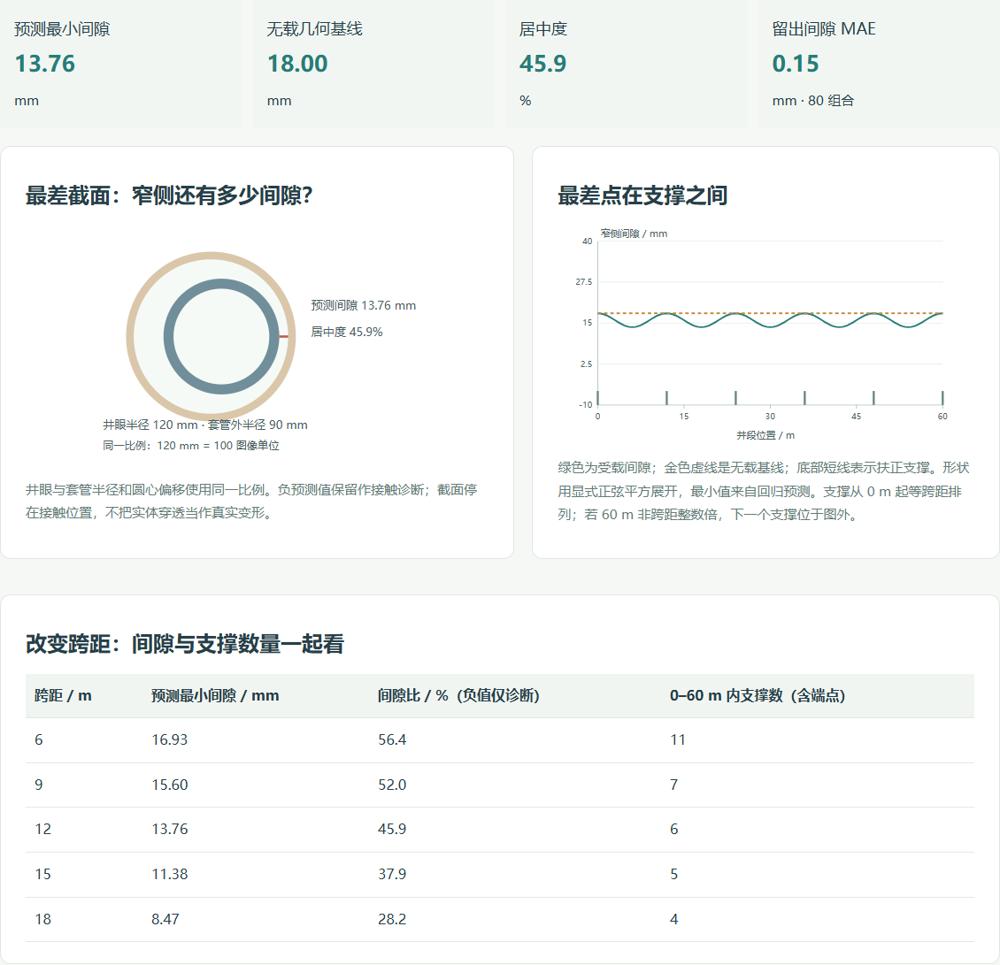
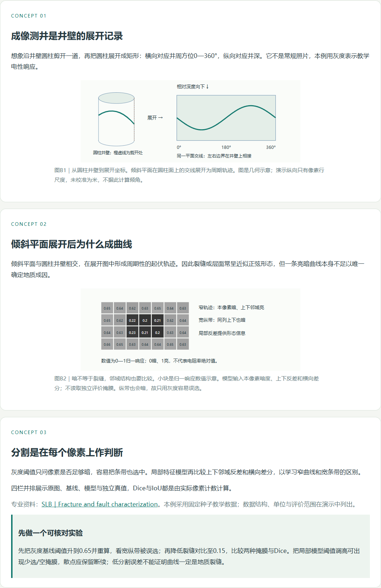

这轮改了什么
- 从专业对象、观测单位和一组可复算的数出发，补足地质、作业与智能方法之间的联系。
- 将泛用三框图替换成每例具体的中间量、流程与操作任务；图表补坐标、量纲、图例及参考线。
- 修正报告否定词和ppmv、持续告警确认时刻、候选枚举端点、实际图像掩膜、套管几何及支撑数量等具体问题。
- 保留已清楚的讲解；保留模型不如基线、预算无解或拒判的实际结果。
七组逐例审阅覆盖61个唯一场景，独立横审另外深读14例。教学判断来自专业知识、图文关系与计算逻辑；图形数量和自动检查项数没有充当教学质量结论。
门户 1.9.1-preview · 录井五例 1.5.3 · 新44例为重点，原有17例同时复核
打开首页 · 逐例审阅汇总 · 结构化结论 · 61例覆盖与本轮验证范围 · 完成记录
七组逐例审阅覆盖61个唯一场景，独立横审另外深读14例。教学判断来自专业知识、图文关系与计算逻辑；图形数量和自动检查项数没有充当教学质量结论。
使用Chrome从老师原站的“添加案例”上传9个当前目录，在沙箱里实际计算、操作并下载结果：s5、w3、c4、pr2、pr4、e3、t5、r5、m5。c4、pr4、m5还刷新并再次运行。w3、e3、m5在浏览器断网状态以file://直接打开计算；w3另查390px独立页面，图像横向滚动保留在图表内部。
其余52例这轮完成源码与计算审阅，未逐例重新跑浏览器。上一版本全覆盖浏览器报告保存在历史验收页，不等于当前修订后61例全量浏览器通过。
老师原站与只读副本及实测资料共63个保护文件保持字节一致；本轮未调用付费模型。
失败的测试辅助脚本尝试保留在attempts，修正等待条件、结果选择器后重新执行，未计为通过。老师原站外壳的窄屏布局不在本轮修订范围。



| 阶段 | 编号 | 案例 | 审阅范围 | 本轮证据 |
|---|---|---|---|---|
| 地质勘察 | G1 | 地质剖面遥感解译：从多波段像素读懂地表单元 | 原有17范围 | 本轮源码与计算审阅 |
| 地质勘察 | G2 | 油气地球化学异常：从单点高值到联合背景偏离 | 新增44范围 | 本轮源码与计算审阅 |
| 地质勘察 | G3 | 地质图要素提取：把符号与图例变成可检索记录 | 新增44范围 | 本轮源码与计算审阅 |
| 地质勘察 | G4 | 露头裂缝统计：从暗色迹线到方向与裂缝强度 | 新增44范围 | 本轮源码与计算审阅 |
| 物探 | S1 | 地震断层自动解释：沿波形不连续性寻找错断 | 原有17范围 | 本轮源码与计算审阅 |
| 物探 | S2 | 地震相智能分类：从反射纹理认识沉积线索 | 新增44范围 | 本轮源码与计算审阅 |
| 物探 | S3 | 初至波自动拾取：把第一段有效能量定位到时间轴 | 新增44范围 | 本轮源码与计算审阅 |
| 物探 | S4 | 储层参数反演：用井震关系估计孔隙度 | 新增44范围 | 本轮源码与计算审阅 |
| 物探 | S5 | 地震资料噪声压制：降低干扰，也检查反射是否保真 | 新增44范围 | 本轮实际导入、交互、下载 |
| 钻井 | D1 | 钻速预测与参数优化：从响应面到可行候选 | 原有17范围 | 本轮源码与计算审阅 |
| 钻井 | D2 | 井下复杂工况预警：先解释正常泵压，再找持续偏离 | 新增44范围 | 本轮源码与计算审阅 |
| 钻井 | D3 | 井眼轨迹控制：学到转向响应后怎样接近目标 | 新增44范围 | 本轮源码与计算审阅 |
| 钻井 | D4 | 钻具状态识别：振动变大还是频带变了 | 新增44范围 | 本轮源码与计算审阅 |
| 钻井 | D5 | 钻井液性能调控：温度变化下寻找可行塑性黏度 | 新增44范围 | 本轮源码与计算审阅 |
| 测井 | W1 | 测井曲线智能分层：识别持续改变的地层响应 | 新增44范围 | 本轮源码与计算审阅 |
| 测井 | W2 | 储层参数智能解释：用岩心标定孔隙度 | 新增44范围 | 本轮源码与计算审阅 |
| 测井 | W3 | 成像测井裂缝识别：从井壁展开图分出窄曲线 | 新增44范围 | 本轮实际导入、交互、下载 |
| 测井 | W4 | 测井岩性识别：多道曲线与可解释近邻 | 原有17范围 | 本轮源码与计算审阅 |
| 测井 | W5 | 测井曲线修复：用可见曲线重建密度缺口 | 新增44范围 | 本轮源码与计算审阅 |
| 固井 | C1 | 固井质量智能评价 | 原有17范围 | 本轮源码与计算审阅 |
| 固井 | C2 | 注水泥参数优化 | 新增44范围 | 本轮源码与计算审阅 |
| 固井 | C3 | 固井漏失风险预测 | 新增44范围 | 本轮源码与计算审阅 |
| 固井 | C4 | 套管居中度智能评估 | 新增44范围 | 本轮实际导入、交互、下载 |
| 完井 | CO1 | 完井方式智能优选 | 原有17范围 | 本轮源码与计算审阅 |
| 完井 | CO2 | 射孔参数智能设计 | 新增44范围 | 本轮源码与计算审阅 |
| 完井 | CO3 | 完井管柱受力智能分析 | 新增44范围 | 本轮源码与计算审阅 |
| 完井 | CO4 | 智能完井滑套控制策略 | 新增44范围 | 本轮源码与计算审阅 |
| 射孔 | P1 | 射孔参数优化：从试验响应到受约束候选 | 原有17范围 | 本轮源码与计算审阅 |
| 射孔 | P2 | 射孔孔道形态预测：材料变化如何影响通道？ | 新增44范围 | 本轮源码与计算审阅 |
| 射孔 | P3 | 射孔弹型智能选型：把目录条件变成证据链 | 新增44范围 | 本轮源码与计算审阅 |
| 射孔 | P4 | 射孔效果智能评估：把工况变化与效果分开 | 新增44范围 | 本轮源码与计算审阅 |
| 采油 | PR1 | 抽油机井工况诊断：从井下泵功图读形状 | 原有17范围 | 本轮源码与计算审阅 |
| 采油 | PR2 | 产量智能预测：用过去推向未来的一小段 | 新增44范围 | 本轮实际导入、交互、下载 |
| 采油 | PR3 | 智能注水调配：有限水量怎样分给三层？ | 新增44范围 | 本轮源码与计算审阅 |
| 采油 | PR4 | 电潜泵故障预警：先解释负荷，再找额外偏离 | 新增44范围 | 本轮实际导入、交互、下载 |
| 采油 | PR5 | 结蜡 / 结垢预测：先把结蜡机理讲清楚 | 新增44范围 | 本轮源码与计算审阅 |
| 修井 | WO1 | 修井作业方案智能推荐：从井史找到有出处的候选 | 原有17范围 | 本轮源码与计算审阅 |
| 修井 | WO2 | 落物打捞工具智能选型 | 新增44范围 | 本轮源码与计算审阅 |
| 修井 | WO3 | 套管损伤智能识别 | 新增44范围 | 本轮源码与计算审阅 |
| 修井 | WO4 | 修井作业风险预警 | 新增44范围 | 本轮源码与计算审阅 |
| 修井 | WO5 | 修井周期预测 | 新增44范围 | 本轮源码与计算审阅 |
| 增采 | E1 | 压裂参数智能优化：在资源边界里比较候选 | 原有17范围 | 本轮源码与计算审阅 |
| 增采 | E2 | 压裂裂缝形态预测 | 新增44范围 | 本轮源码与计算审阅 |
| 增采 | E3 | 化学驱配方智能筛选 | 新增44范围 | 本轮实际导入、交互、下载 |
| 增采 | E4 | 蒸汽吞吐注采参数优化 | 新增44范围 | 本轮源码与计算审阅 |
| 增采 | E5 | 微生物采油菌群活性预测 | 新增44范围 | 本轮源码与计算审阅 |
| 运输 | T1 | 管道泄漏智能检测：从正常关系到事件核查 | 原有17范围 | 本轮源码与计算审阅 |
| 运输 | T2 | 管道腐蚀评估：先找对缺陷，再谈增长 | 新增44范围 | 本轮源码与计算审阅 |
| 运输 | T3 | 集输工况优化：同样输量怎样少用电 | 新增44范围 | 本轮源码与计算审阅 |
| 运输 | T4 | 油气计量校正：分清读数变化与仪表偏移 | 新增44范围 | 本轮源码与计算审阅 |
| 运输 | T5 | 储罐液位监控：图像读数怎样与雷达互相核对 | 新增44范围 | 本轮实际导入、交互、下载 |
| 加工 | R1 | 常减压操作优化：收率、质量与能耗的边界 | 新增44范围 | 本轮源码与计算审阅 |
| 加工 | R2 | 催化裂化产物预测：一百公斤原料去了哪里 | 新增44范围 | 本轮源码与计算审阅 |
| 加工 | R3 | 炼化设备预测性维护：先解释负荷，再追踪退化 | 新增44范围 | 本轮源码与计算审阅 |
| 加工 | R4 | 化验数据智能审核：从原文单位到指标关系 | 新增44范围 | 本轮源码与计算审阅 |
| 加工 | R5 | 产品质量在线软测量：化验到来之前 | 原有17范围 | 本轮实际导入、交互、下载 |
| 录井 | M1 | 岩屑岩性自动识别：一盘岩屑的像素与证据 | 原有17范围 | 本轮源码与计算审阅 |
| 录井 | M2 | 气测异常智能解释：气峰背后的工况与迟到 | 原有17范围 | 本轮源码与计算审阅 |
| 录井 | M3 | 荧光图像智能判读：显示与来源分开核查 | 原有17范围 | 本轮源码与计算审阅 |
| 录井 | M4 | 钻时曲线地层划分：工况校正与候选响应段 | 原有17范围 | 本轮源码与计算审阅 |
| 录井 | M5 | 录井报告自动生成：每句话都有当前证据 | 原有17范围 | 本轮实际导入、交互、下载 |
源码/计算报告与浏览器记录分别保存。新44例默认计算检查 · 报告字段18个专项输入及3个内置样本。具体教学简化和未验证范围见逐例报告与完成记录。